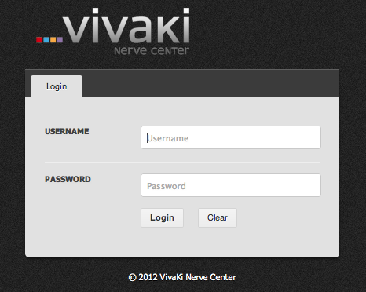

Introducing, Brainstem.
Brainstem is a fast, scalable, and efficient set of REST-ful web services used to help make Amazon's Web Services easier to manage. These web services serve as a “broker” between end users/developers as they create, modify, and remove various pieces of AWS infrastructure, ensuring that critical business needs (security, authorization, configuration, cost control, etc) are fulfilled. Users, developers, and engineers are able to choose thier prefered way of using Braintem because it separates the UI and API.
Brainstem is REST API written in Ruby. Brianstem also has detailed documentation for every one of it's features an includes sample code for your prefered language to get you up and running as soon as possible. We use AWS everyday and we know what it takes to get things done. Brainstem helps us get those things done faster and more efficiently.
Brainstem Features
Active Directory Integration
One of the main features of Brainstem is that it integrates directly with Active Directory. This allows authentication and authorization to be centrally managed. Why have another system to manage your system?
AWS Services
* Currently supports the follwoing AWS services: EC2, EBS, EMR, RDS, and IAM * Provision temporary keys for all AWS services * Logging by individual user and action for auditing purposes * RESTful architecture enables programmatic access using any language that can make HTTP requests * Smart caching provides fast API response times * Full documentation across entire API, including code samples for multiple languagesBrainstem Web Interface
* Clean, simple user interface allows fast access (control/manipulation) of AWS resources * HTML5 thick-client * Requires no server-side application code * Option to see raw API request before being sent to Brainstem server to ease developer adoption
Brainatem Development
* Core API and GUI built in 6-day offsite hackathon * Agile approach contributed to team's ability to collaborate efficiently * Twice daily standups kept team aligned while allowing for individual focused time * Parallel development of API and GUI (i.e. client) enabled by close collaboration and good documentaiton * something about how we were able to dev GUI and API in parallel